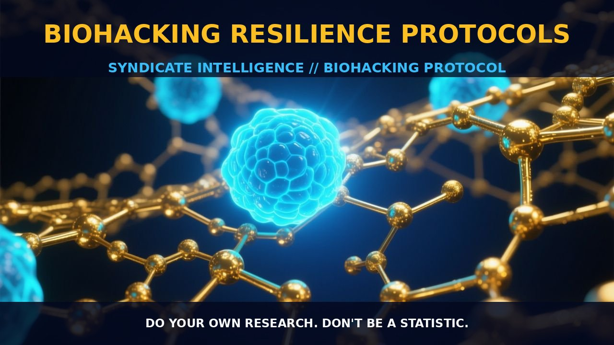

Biohacking Resilience Protocols: Enhancing Stress Tolerance and

1. The Mechanism
Enhancing resilience through biohacking protocols involves a range of physiological and psychological strategies that support an individual's capacity to withstand stress and maintain mental and emotional stability. These protocols focus on modulating key biological pathways involved in stress response, cognitive function, and emotional regulation.
Neurohacking strategies, such as cognitive enhancement through nootropics and mindfulness practices, target the brain's neurotransmitter systems, including the dopaminergic, serotonergic, and glutamatergic pathways. These pathways are crucial for mood regulation, cognitive performance, and stress resilience. For example, nootropics like piracetam and noopept enhance glutamate neurotransmission, which supports cognitive function and stress tolerance.
Adaptogens like ashwagandha and rhodiola rosea also play a key role. They modulate the hypothalamic-pituitary-adrenal (HPA) axis, regulating cortisol levels, a key stress hormone. By balancing cortisol, these adaptogens support the body's resilience to stress, enabling individuals to better manage emotional and physical demands.
Optimizing circadian rhythms and sleep patterns is another critical aspect. Disruptions in sleep can significantly impact cognitive function, mood, and stress resilience. Melatonin, a hormone produced by the pineal gland, is pivotal in regulating sleep-wake cycles. Biohackers may supplement with melatonin to reset and stabilize circadian rhythms, thereby improving sleep quality and enhancing resilience.
2. Biological Leverage
Biohacking resilience protocols leverage several biological systems to bolster stress resistance and emotional stability. A key pathway is the modulation of the HPA axis, a central component of the stress response system involving the hypothalamus, pituitary gland, and adrenal glands. Chronic stress can lead to dysregulation of the HPA axis, resulting in elevated cortisol levels and reduced resilience.
Adaptogenic herbs and nutrients help stabilize the HPA axis. For example, ashwagandha has been shown to modulate the HPA axis by reducing cortisol levels, thereby promoting stress resilience. Additionally, magnesium, an essential mineral, plays a crucial role in regulating the HPA axis by supporting the synthesis and release of neurotransmitters involved in stress response.
The neuroendocrine system, which regulates the release of hormones and neurotransmitters that impact mood and cognitive function, is another critical system. Biohackers often use nootropics and cognitive enhancers to modulate this system. For instance, noopept enhances cognitive function by modulating neurotransmitter release and supporting neuroplasticity. By enhancing neurotransmitter function, noopept can improve mood and stress resilience.
The use of vitamin B complex, essential for the synthesis of neurotransmitters like serotonin and dopamine, can help stabilize mood and enhance cognitive function, contributing to overall resilience.
3. Protocol Implementation
Implementing biohacking resilience protocols requires a comprehensive approach that integrates various strategies to optimize cognitive, emotional, and physical resilience. A foundational aspect is the use of adaptogenic herbs and nootropics. Adaptogens like ashwagandha and rhodiola rosea can be taken in low-to-moderate amounts daily to help stabilize the HPA axis and support stress resilience. These herbs should be taken consistently over several weeks to achieve optimal benefits.
Nootropics such as piracetam and noopept can be used in combination to enhance cognitive function and emotional stability. A common approach is to start with low doses and gradually increase as tolerance builds.
Optimizing sleep and circadian rhythms is another crucial aspect. Maintaining a regular sleep schedule and ensuring adequate sleep duration are essential for stress resilience. Biohackers often supplement with melatonin to support sleep-wake cycles, particularly during jet lag or when adjusting to new sleep patterns. Melatonin can be taken in low doses (0.5-3 mg) about an hour before bedtime to help regulate sleep.
Magnesium-rich foods or supplements can be incorporated into the diet to support the neuroendocrine system and improve sleep quality. A consistent routine, including regular meal times and daily physical activity, can further enhance circadian stability and resilience.
Lastly, biohackers often incorporate mindfulness and neurofeedback practices to enhance emotional resilience. Mindfulness meditation, practiced daily for 15-20 minutes, can help regulate stress response and improve emotional stability. Neurofeedback, which involves training the brain to regulate its own activity, can be used to enhance cognitive performance and emotional regulation.
Prostar Life Hack
Adaptogenic herbs like ashwagandha and rhodiola rosea, when taken consistently, can help stabilize the HPA axis and support stress resilience. Start with low-to-moderate doses and gradually increase as needed.
[ AUTHOR: LEAD TECHNICAL RESEARCHER ]